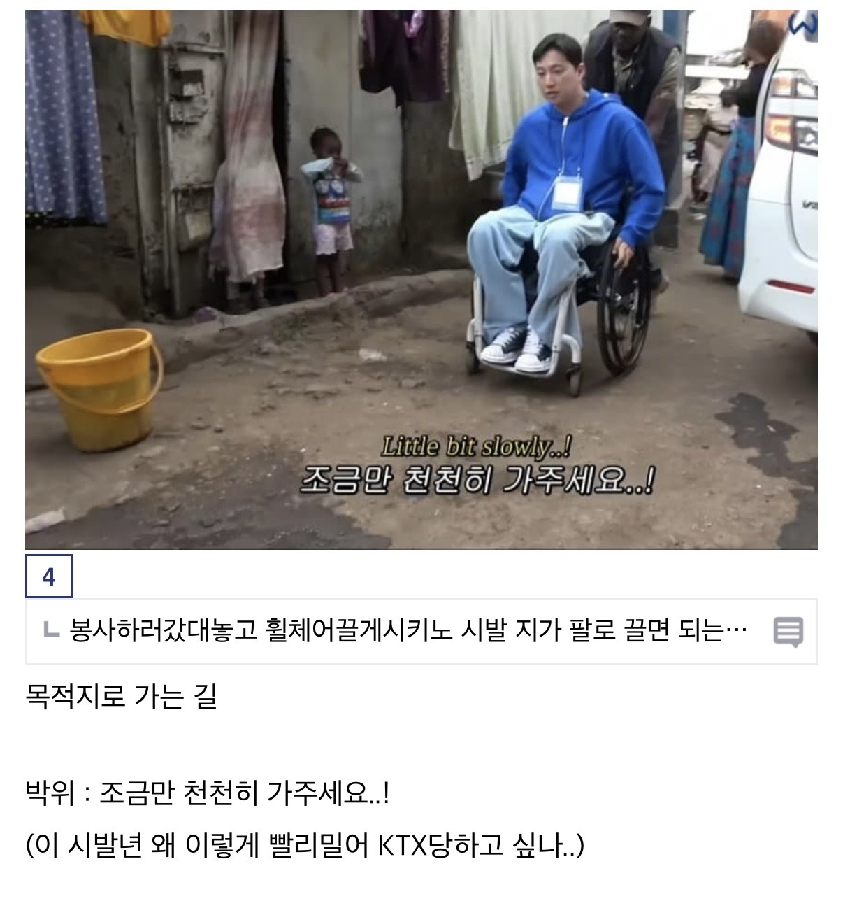
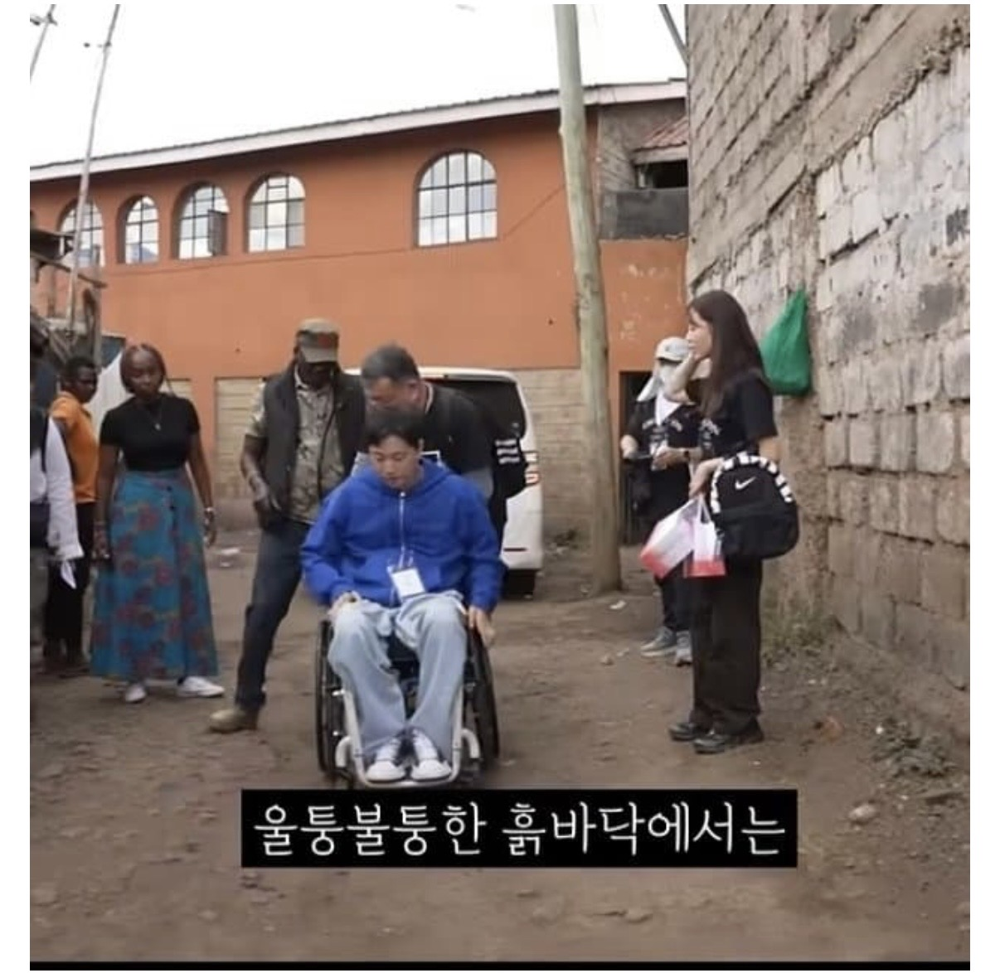
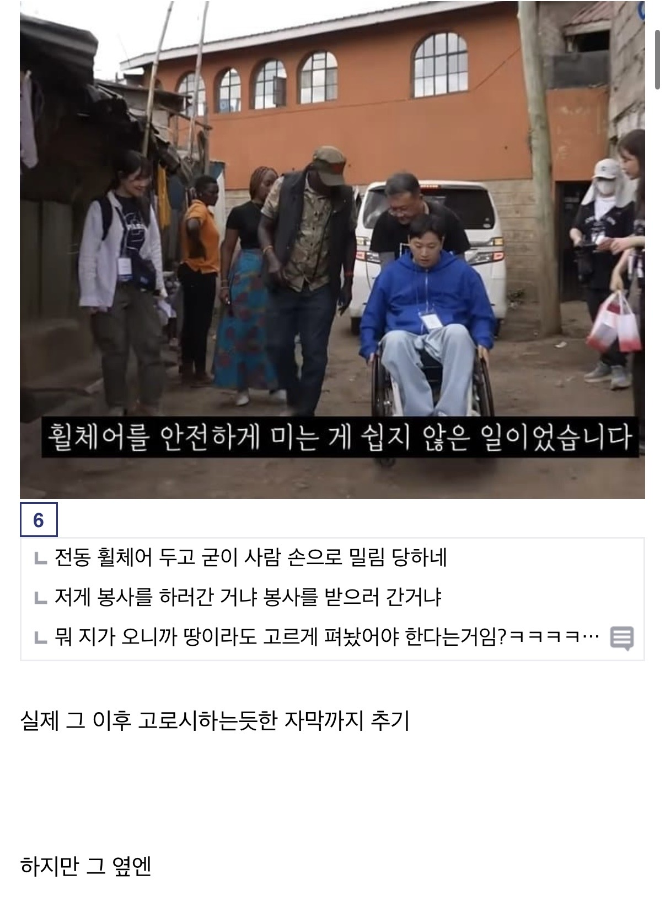
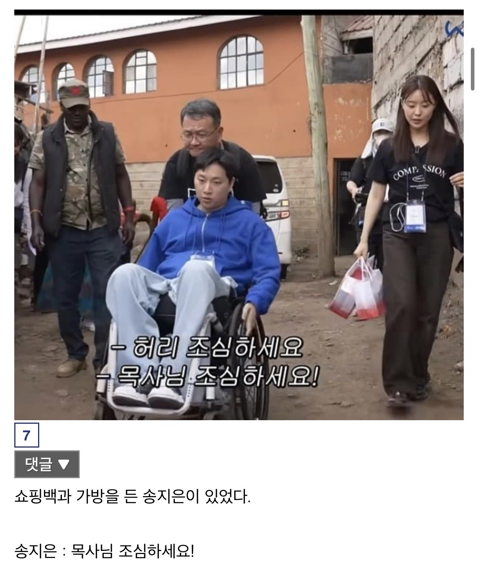
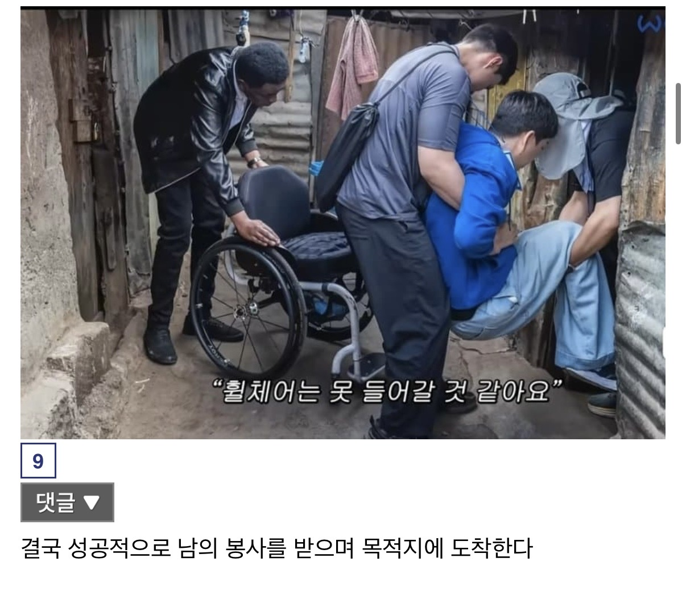
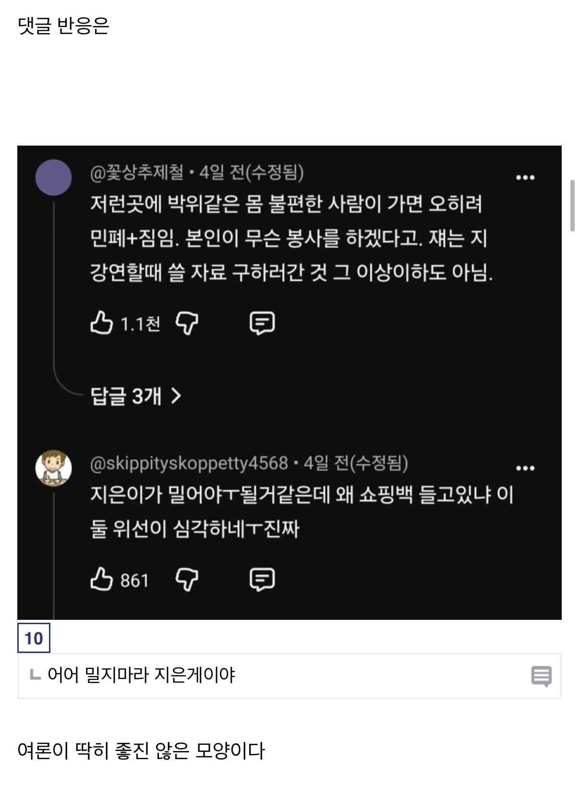

쟤가 뭐 그렇게 특별한 능력이 있다고 안그래도 봉사인력부족한곳에서 여러명이 재를 케어하면서 인력낭비를 하니까 그런거 아니겠엉
돈주는거아니면 좆도도움안되긴해
??? : 내가 고혈을 빨아야 된다고!!
봉사현장에 국회의원들 굳이 찾아가서 사진찍고 나오는 느낌인데
이미지마케팅은 해야되고 봉사는 안하고
가서 뭐하는진 몰라도 봉사활동이 신체노동만 있는게 아닌데 하체마비니까 도움안된다는건 그것대로 존나 편견아님? 도움안되고 컨텐츠만 뽑았다는 증거없음 억까같은데